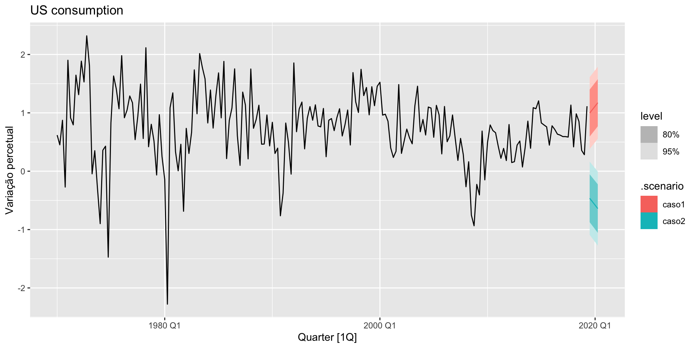

| dias | D1 | D2 | D3 | D4 | D5 | D6 |
|---|---|---|---|---|---|---|
| Segunda | 1 | 0 | 0 | 0 | 0 | 0 |
| Terça | 0 | 1 | 0 | 0 | 0 | 0 |
| Quarta | 0 | 0 | 1 | 0 | 0 | 0 |
| Quinta | 0 | 0 | 0 | 1 | 0 | 0 |
| Sexta | 0 | 0 | 0 | 0 | 1 | 0 |
| Sábado | 0 | 0 | 0 | 0 | 0 | 1 |
| Domingo | 0 | 0 | 0 | 0 | 0 | 0 |
| Segunda | 1 | 0 | 0 | 0 | 0 | 0 |
Modelos de regressão em dados de séries temporais II
ME607 - Séries Temporais
Prof. Carlos Trucíos
ctrucios@unicamp.br
ctrucios@unicamp.br
Instituto de Matemática, Estatística e Computação Científica (IMECC),
Universidade Estadual de Campinas (UNICAMP).
Introdução
Introdução
- Na aula anterior vimos como incluir termos de tendência:
- Tendência Linear: \(y_t = \alpha_0 + \alpha_1 t + e_t\),
- Tendência Quadrática: \(y_t = \alpha_0 + \alpha_1 t + \alpha_2 t^2 + e_t\),
- Tendência Cúbica: \(y_t = \alpha_0 + \alpha_1 t + \alpha_2 t^2 + \alpha_3 t^3 + e_t\).
- Na aula de hoje aprenderemos a utilizar outros preditores úteis quando trabalhamos com modelos de regressão em um contexto de séries temporais.
- Discutiremos como fazer previsão neste tipo de modelos.
Regressores úteis
Variáveis Dummy
- Utilizada para tomar conta das diferenças nos diversos períodos sazonais.
- Utilizada para dividir períodos de tempo. Por exemplo:
- posicionamento politico na presidencia: direita ou esquerda,
- período covid: antes do covid e depois do covid (março 12, 2020),
- antes e depois do 11-09-2001,
- antes e depois de determinada politica na empresa (ou politica pública),
- feriados
- eventos raros: copa do mundo, jogos olimpicos, etc.
Regressores úteis
Variáveis Dummy
Regressores úteis
Variáveis Dummy
| Estacoes | D1 | D2 | D3 |
|---|---|---|---|
| Primaveira | 1 | 0 | 0 |
| Verão | 0 | 1 | 0 |
| Outono | 0 | 0 | 1 |
| Inverno | 0 | 0 | 0 |
| Primaveira | 1 | 0 | 0 |
| Verão | 0 | 1 | 0 |
Regressores úteis
Dias de negociação
Dependo do que queremos prever, o numero de dias úteis (ou dias de negociação) pode influenciar em, por exemplo, o volume de vendas mensal.
- Incluir uma variável com o número de dias úteis no mês pode ser útil para nosso modelo.
- Outra alternativa é incluir o número de cada dia da semana em que houve negociação. Por exemplo:
- \(x_1:\) número de segundas-feiras no mês.
- \(x_2:\) número de terças-feiras no mês.
- \(\vdots\)
- \(x_6:\) número de sábados no mês.
- \(x_7:\) número de domingos no mês.
Regressores úteis
Variáveis defasadas
Podemos pensar que, por exemplo, o número de vendas depende dos gastos em publicidade. Contudo, às vezes os gastos em publicidade do mês anterior poderiam ter um efeito nas vendas do mês atual. Nesse sentido, incluir variáveis defasadas pode ajudar a melhorar o modelo.
- \(x_1:\) gasto em publicidade no mês anterior.
- \(x_2:\) gasto em publicidade há dois meses.
- \(\vdots\)
- \(x_m:\) gasto em publicidade há \(m\) meses.
Regressores úteis
Páscoa
A páscoa não acontece todo ano no mesmo periodo, páscoa pode afetar diferentes negócios (turismo, por exemplo). Incluir no modelo uma variável que tome conta desse fator pode ser interessante. Nestes casos podemos:
- Incluir variáveis dummy nos dias da páscoa,
- Se trabalharmos com dados mensais, incluir uma dummy no mês que a páscoa cair.
Regressores úteis
Séries de Fourier
- É uma alternativa ao uso de variáveis dummy em dados sazonais.
- Para um período sazonal \(m\) temos:
- \(x_1 = \sin(\dfrac{2\pi t}{m}), \quad x_2 = \cos(\dfrac{2\pi t}{m}),\)
- \(x_3 = \sin(\dfrac{4\pi t}{m}), \quad x_4 = \cos(\dfrac{4\pi t}{m}),\)
- \(x_5 = \sin(\dfrac{6\pi t}{m}), \quad x_6 = \cos(\dfrac{6\pi t}{m}),\)
- \(\vdots\)
Uma regressão que inclui termos de Fourier, é chamada “modelo de regressao harmônica”.
Tendência + Sazonalidade
Tendência + Sazonalidade
Lembrando
A decomposição de séries temporais pode ser definida como
\[\underbrace{Y_t = T_t + S_t + R_t}_{\text{Modelo aditivo}} \quad ou \quad \underbrace{Y_t = T_t \times S_t \times R_t}_{\text{Modelo multiplicativo}}\]
Fazendo algumas modificações, podemos transformar a equação acima em um modelo de regressão da forma
\[Y_t = \beta_0 + \beta_1 T_t + \beta_2 S_t + \epsilon_t\]
\[\text{ou} \quad \log(Y_t) = \beta_0 + \beta_1 \log(T_t) + \beta_2 \log(S_t) + \epsilon_t\]
Bastando apenas saber quem utilizarmos como \(T_t\) e quem como \(S_t\).
Tendência + Sazonalidade
- Já temos aprendido como lidar com \(T_t\):
- Tendência Linear: \(y_t = \alpha_0 + \alpha_1 t + e_t\),
- Tendência Quadrática: \(y_t = \alpha_0 + \alpha_1 t + \alpha_2 t^2 + e_t\),
- Tendência Cúbica: \(y_t = \alpha_0 + \alpha_1 t + \alpha_2 t^2 + \alpha_3 t^3 + e_t\).
- etc.
- Para \(S_t\) podemos:
- Utilizar variáveis dummy
- Utilizar regressores de Fourier
Tendência + Sazonalidade
The USgas series is a ts object with 1 variable and 238 observations
Frequency: 12
Start time: 2000 1
End time: 2019 10 Code
Features engineering | Data Wrangling
ds y
1 2000-01-01 2510.5
2 2000-02-01 2330.7
3 2000-03-01 2050.6
4 2000-04-01 1783.3
5 2000-05-01 1632.9
6 2000-06-01 1513.1Code
ds y trend seasonal
1 2000-01-01 2510.5 1 Jan
2 2000-02-01 2330.7 2 Feb
3 2000-03-01 2050.6 3 Mar
4 2000-04-01 1783.3 4 Apr
5 2000-05-01 1632.9 5 May
6 2000-06-01 1513.1 6 Jun
Call:
lm(formula = y ~ seasonal + trend + I(trend^2), data = USgas_df)
Residuals:
Min 1Q Median 3Q Max
-473.54 -55.44 -0.79 63.31 285.69
Coefficients:
Estimate Std. Error t value Pr(>|t|)
(Intercept) 2.648e+03 3.166e+01 83.653 < 2e-16 ***
seasonalFeb -3.058e+02 3.476e+01 -8.799 3.77e-16 ***
seasonalMar -4.857e+02 3.476e+01 -13.974 < 2e-16 ***
seasonalApr -9.283e+02 3.476e+01 -26.709 < 2e-16 ***
seasonalMay -1.109e+03 3.476e+01 -31.912 < 2e-16 ***
seasonalJun -1.129e+03 3.476e+01 -32.469 < 2e-16 ***
seasonalJul -9.591e+02 3.476e+01 -27.591 < 2e-16 ***
seasonalAug -9.366e+02 3.476e+01 -26.943 < 2e-16 ***
seasonalSep -1.141e+03 3.477e+01 -32.829 < 2e-16 ***
seasonalOct -1.044e+03 3.477e+01 -30.017 < 2e-16 ***
seasonalNov -7.927e+02 3.522e+01 -22.507 < 2e-16 ***
seasonalDec -2.683e+02 3.522e+01 -7.618 7.18e-13 ***
trend -1.560e+00 4.168e-01 -3.743 0.000231 ***
I(trend^2) 1.869e-02 1.689e-03 11.063 < 2e-16 ***
---
Signif. codes: 0 '***' 0.001 '**' 0.01 '*' 0.05 '.' 0.1 ' ' 1
Residual standard error: 109.9 on 224 degrees of freedom
Multiple R-squared: 0.9412, Adjusted R-squared: 0.9377
F-statistic: 275.6 on 13 and 224 DF, p-value: < 2.2e-16Code
Call:
tslm(formula = USgas ~ season + trend + I(trend^2))
Residuals:
Min 1Q Median 3Q Max
-473.54 -55.44 -0.79 63.31 285.69
Coefficients:
Estimate Std. Error t value Pr(>|t|)
(Intercept) 2.648e+03 3.166e+01 83.653 < 2e-16 ***
season2 -3.058e+02 3.476e+01 -8.799 3.77e-16 ***
season3 -4.857e+02 3.476e+01 -13.974 < 2e-16 ***
season4 -9.283e+02 3.476e+01 -26.709 < 2e-16 ***
season5 -1.109e+03 3.476e+01 -31.912 < 2e-16 ***
season6 -1.129e+03 3.476e+01 -32.469 < 2e-16 ***
season7 -9.591e+02 3.476e+01 -27.591 < 2e-16 ***
season8 -9.366e+02 3.476e+01 -26.943 < 2e-16 ***
season9 -1.141e+03 3.477e+01 -32.829 < 2e-16 ***
season10 -1.044e+03 3.477e+01 -30.017 < 2e-16 ***
season11 -7.927e+02 3.522e+01 -22.507 < 2e-16 ***
season12 -2.683e+02 3.522e+01 -7.618 7.18e-13 ***
trend -1.560e+00 4.168e-01 -3.743 0.000231 ***
I(trend^2) 1.869e-02 1.689e-03 11.063 < 2e-16 ***
---
Signif. codes: 0 '***' 0.001 '**' 0.01 '*' 0.05 '.' 0.1 ' ' 1
Residual standard error: 109.9 on 224 degrees of freedom
Multiple R-squared: 0.9412, Adjusted R-squared: 0.9377
F-statistic: 275.6 on 13 and 224 DF, p-value: < 2.2e-16Tendência + Sazonalidade
Produção trimestral de cerveja na Australia

Contruiremos um modelo da forma \[Beer_t = \beta_0 + \beta_1 t + \beta_2 D_{2,t} + \beta_3 D_{3,t} + \beta_4 D_{4,t} + \epsilon_t,\] em que \(D_{i,t} = 1\) se \(t \in\) Trimestre \(i\) e 0, caso contrário.
Tendência + Sazonalidade
Series: Beer
Model: TSLM
Residuals:
Min 1Q Median 3Q Max
-42.9029 -7.5995 -0.4594 7.9908 21.7895
Coefficients:
Estimate Std. Error t value Pr(>|t|)
(Intercept) 441.80044 3.73353 118.333 < 2e-16 ***
trend() -0.34027 0.06657 -5.111 2.73e-06 ***
season()year2 -34.65973 3.96832 -8.734 9.10e-13 ***
season()year3 -17.82164 4.02249 -4.430 3.45e-05 ***
season()year4 72.79641 4.02305 18.095 < 2e-16 ***
---
Signif. codes: 0 '***' 0.001 '**' 0.01 '*' 0.05 '.' 0.1 ' ' 1
Residual standard error: 12.23 on 69 degrees of freedom
Multiple R-squared: 0.9243, Adjusted R-squared: 0.9199
F-statistic: 210.7 on 4 and 69 DF, p-value: < 2.22e-16Series: Beer
Model: TSLM
Residuals:
Min 1Q Median 3Q Max
-42.9029 -7.5995 -0.4594 7.9908 21.7895
Coefficients:
Estimate Std. Error t value Pr(>|t|)
(Intercept) 446.87920 2.87321 155.533 < 2e-16 ***
trend() -0.34027 0.06657 -5.111 2.73e-06 ***
fourier(K = 2)C1_4 8.91082 2.01125 4.430 3.45e-05 ***
fourier(K = 2)S1_4 -53.72807 2.01125 -26.714 < 2e-16 ***
fourier(K = 2)C2_4 -13.98958 1.42256 -9.834 9.26e-15 ***
---
Signif. codes: 0 '***' 0.001 '**' 0.01 '*' 0.05 '.' 0.1 ' ' 1
Residual standard error: 12.23 on 69 degrees of freedom
Multiple R-squared: 0.9243, Adjusted R-squared: 0.9199
F-statistic: 210.7 on 4 and 69 DF, p-value: < 2.22e-16Tendência + Sazonalidade: Dummy
Code
augment(modelo_dummy) %>%
ggplot(aes(x = Quarter)) +
geom_line(aes(y = Beer, colour = "Data")) +
geom_line(aes(y = .fitted, colour = "Fitted")) +
scale_colour_manual(values = c(Data = "black", Fitted = "red")) + ylab("Megalitros") + xlab("Trimestre") + ggtitle("Produção trimestral de cerveja australiana") +
guides(colour = guide_legend(title = "Séries"))
Tendência + Sazonalidade: Fourier
Code
augment(modelo_fourier) %>%
ggplot(aes(x = Quarter)) +
geom_line(aes(y = Beer, colour = "Data")) +
geom_line(aes(y = .fitted, colour = "Fitted")) +
scale_colour_manual(values = c(Data = "black", Fitted = "blue")) + ylab("Megalitros") + xlab("Trimestre") + ggtitle("Produção trimestral de cerveja australiana") +
guides(colour = guide_legend(title = "Séries"))Tendência + Sazonalidade: Diagnóstico
# A tibble: 5 × 6
.model term estimate std.error statistic p.value
<chr> <chr> <dbl> <dbl> <dbl> <dbl>
1 TSLM(Beer ~ trend() + season()) (Interc… 442. 3.73 118. 2.02e-81
2 TSLM(Beer ~ trend() + season()) trend() -0.340 0.0666 -5.11 2.73e- 6
3 TSLM(Beer ~ trend() + season()) season(… -34.7 3.97 -8.73 9.10e-13
4 TSLM(Beer ~ trend() + season()) season(… -17.8 4.02 -4.43 3.45e- 5
5 TSLM(Beer ~ trend() + season()) season(… 72.8 4.02 18.1 6.68e-28# A tibble: 1 × 3
.model bp_stat bp_pvalue
<chr> <dbl> <dbl>
1 TSLM(Beer ~ trend() + season()) 9.53 0.0230# A tibble: 1 × 3
.model lb_stat lb_pvalue
<chr> <dbl> <dbl>
1 TSLM(Beer ~ trend() + season()) 10.4 0.0157# A tibble: 5 × 6
.model term estimate std.error statistic p.value
<chr> <chr> <dbl> <dbl> <dbl> <dbl>
1 TSLM(Beer ~ trend() + fourier(K =… (Int… 447. 2.87 156. 1.39e-89
2 TSLM(Beer ~ trend() + fourier(K =… tren… -0.340 0.0666 -5.11 2.73e- 6
3 TSLM(Beer ~ trend() + fourier(K =… four… 8.91 2.01 4.43 3.45e- 5
4 TSLM(Beer ~ trend() + fourier(K =… four… -53.7 2.01 -26.7 4.10e-38
5 TSLM(Beer ~ trend() + fourier(K =… four… -14.0 1.42 -9.83 9.26e-15# A tibble: 1 × 3
.model bp_stat bp_pvalue
<chr> <dbl> <dbl>
1 TSLM(Beer ~ trend() + fourier(K = 2)) 9.53 0.0230# A tibble: 1 × 3
.model lb_stat lb_pvalue
<chr> <dbl> <dbl>
1 TSLM(Beer ~ trend() + fourier(K = 2)) 10.4 0.0157Tendência + Sazonalidade: Diagnóstico
O K = m/2 em fourier() especifica quantos pares de \(\sin()\) e \(\cos()\) utilizaremos na regressão. Como utilizamos o máximo (\(m = 4 \rightarrow K = 2\)), teremos exatamente os mesmos \(\hat{y}\)
[,1] [,2]
[1,] 441.4602 441.4602
[2,] 406.4602 406.4602
[3,] 422.9580 422.9580
[4,] 513.2358 513.2358
[5,] 440.0991 440.0991
[6,] 405.0991 405.0991- Teste utilizando \(K = 1\).
- Quando \(m\) for grande, utilizar variáveis de Fourier é mais utilizado.
- Quando \(m\) for pequeno, não há muitos ganhos em utilizar variáveis de Fourier.
Previsão
Previsão

- Temos visto como usar modelos de regressão em um contexto de séries temporias, mas nada foi dito sobre como fazer previsão \(h\) passos à frente.
- Sabemos que, com os \(\hat{\beta}s\), podemos obter os valores estimados \(\hat{y}_t\) ( \(t = 1, \ldots, T\)) através da equação \[\hat{y}_t = \hat{\beta}_0 + \hat{\beta}_1 x_{1,t} + \cdots + \hat{\beta}_k x_{k,t}.\]
Previsão
Mas, como fazer se estamos interessados em \(\hat{y}_{T+1|T}, \cdots, \hat{y}_{T+h|T}\)?
Em geral, quando trabalhamos com modelos da forma \[y_t = \beta_0 + \beta_1 x_{1,t} + \cdots + \beta_k x_{k,t} + e_t\] nunca conhecemos os valores de \(x_1, x_2, ..., x_k\) no futuro, exceto quando \(x_i\) é deterministico!.
Pense no modelo \[y_t = \beta_0 + \beta_1 x_{1,t} + \cdots + \beta_k x_{k,t} + e_t\] em que \(x_1 = t\), \(x_2 = t^2\), \(x_3 = D_{Fevereiro}\), \(x_4 = D_{Março}\), …. \(x_k = D_{Dezembro}\).
Basta obter \(\hat{\beta}\) (utilizando a informação disponível até o tempo \(T\)), utilizar os valores futuros das variáveis explicativas ( \(x_{1, T + h}, \ldots, x_{k, T + h}\) ) e fazer a previsão!.
Previsão
Utilizando o dataset aus_production do pacote fpp3, faremos a previsão \(h = 12\) passos à frente da produção de cerveja (Beer) na Austrália.

Series: Beer
Model: TSLM
Residuals:
Min 1Q Median 3Q Max
-42.1193 -7.7552 -0.5074 7.7665 22.3373
Coefficients:
Estimate Std. Error t value Pr(>|t|)
(Intercept) 439.41993 3.87255 113.471 < 2e-16 ***
trend() -0.31359 0.07303 -4.294 5.98e-05 ***
season()year2 -34.79753 4.11473 -8.457 4.51e-12 ***
season()year3 -17.56209 4.17414 -4.207 8.09e-05 ***
season()year4 71.75149 4.17478 17.187 < 2e-16 ***
---
Signif. codes: 0 '***' 0.001 '**' 0.01 '*' 0.05 '.' 0.1 ' ' 1
Residual standard error: 12.34 on 65 degrees of freedom
Multiple R-squared: 0.9213, Adjusted R-squared: 0.9164
F-statistic: 190.1 on 4 and 65 DF, p-value: < 2.22e-16# A fable: 12 x 4 [1Q]
# Key: .model [1]
.model Quarter
<chr> <qtr>
1 TSLM(Beer ~ trend() + season()) 2010 Q3
2 TSLM(Beer ~ trend() + season()) 2010 Q4
3 TSLM(Beer ~ trend() + season()) 2011 Q1
4 TSLM(Beer ~ trend() + season()) 2011 Q2
5 TSLM(Beer ~ trend() + season()) 2011 Q3
6 TSLM(Beer ~ trend() + season()) 2011 Q4
7 TSLM(Beer ~ trend() + season()) 2012 Q1
8 TSLM(Beer ~ trend() + season()) 2012 Q2
9 TSLM(Beer ~ trend() + season()) 2012 Q3
10 TSLM(Beer ~ trend() + season()) 2012 Q4
11 TSLM(Beer ~ trend() + season()) 2013 Q1
12 TSLM(Beer ~ trend() + season()) 2013 Q2
# ℹ 2 more variables: Beer <dist>, .mean <dbl>
Previsão
No exemplo anterior, vimos que fazer previsão quando as variáveis explicativas são determinísticas resume-se a:
- Obter \(\hat{\beta}\),
- Utilizar os valores das variáveis explicativas (\(x_i\)) no futuro (como as variáveis são determinísticas sempre temos esses valores!),
- Utilizar o modelo e obter \(\hat{y}_{T+h|T}\).
Contudo, muito raramente o modelo terá apenas variáveis determinísticas!. Na prática, o modelo terá variaveis explicativas \(x_{k+1}, \ldots, x_{k+p}\) cujos valores no tempo \(T+h\) não são conhecidos no tempo \(T\) 😱.
Previsão
O modelo que estou utilizando tem variáveis que não são determinísticas, e agora?

- Utilizar previsões das variáveis preditoras utilizadas no modelo.
- Trabalhar com cenários.
Previsão
Assumimos diferentes cenários para as variáveis explicativas no modelo:
- Se o IPCA aumetar, em média 0.8% nos próximos meses, o volume de vendas nas festas de final de ano será de…
- Se até final do ano o PIB aumentar em x%, a previsão da taxa de desempregados no Brasil será de …..
- Se o número de vacinados contra a COVID-19 no Brasil aumentar em x%, a receita com turismo interno no Brasil será de ….
Em todos os casos temos apenas cenários, não há garantia que isso acontecerá mas, se acotecer, temos um valor esperado de como irá se comportar o fenômeno de interesse ao longo do tempo.
Previsão
Code
modelo <- us_change %>% model(lm = TSLM(Consumption ~ Income + Savings + Unemployment))
# Criando os cenários
cenarios <- scenarios(
caso1 = new_data(us_change, 4) |> # pega o dataset e cria 4 novas observacoes
mutate(Income = c(1, 1.1, 1.2, 1.3), # Criando cenário para Income
Savings = c(0.5, 0.52, 0.54, 0.56), # Criando cenário para Savings
Unemployment = c(0, 0.05, 0.10, 0.15)), # Criando cenário para Unemployment
caso2 = new_data(us_change, 4) |> # pega o dataset e cria 4 novas observacoes
mutate(Income = -c(1, 1.1, 1.2, 1.3), # Criando cenário para Income
Savings = -c(0.5, 0.52, 0.54, 0.56), # Criando cenário para Savings
Unemployment = -c(0, 0.05, 0.10, 0.15)))
fc <- forecast(modelo, new_data = cenarios)
fc# A fable: 8 x 8 [1Q]
# Key: .scenario, .model [2]
.scenario .model Quarter
<chr> <chr> <qtr>
1 caso1 lm 2019 Q3
2 caso1 lm 2019 Q4
3 caso1 lm 2020 Q1
4 caso1 lm 2020 Q2
5 caso2 lm 2019 Q3
6 caso2 lm 2019 Q4
7 caso2 lm 2020 Q1
8 caso2 lm 2020 Q2
# ℹ 5 more variables: Consumption <dist>, .mean <dbl>, Income <dbl>,
# Savings <dbl>, Unemployment <dbl>Previsão
Previsão
O que foi feito?
# A tibble: 4 × 6
.model term estimate std.error statistic p.value
<chr> <chr> <dbl> <dbl> <dbl> <dbl>
1 lm (Intercept) 0.266 0.0341 7.81 3.57e-13
2 lm Income 0.757 0.0396 19.1 1.91e-46
3 lm Savings -0.0537 0.00292 -18.4 2.55e-44
4 lm Unemployment -0.313 0.0678 -4.62 7.06e- 6\[\widehat{\text{Consumption}}_{T+h} = 0.266 + 0.757 \text{Income}_{T+h} -0.0537 \text{Savings}_{T+h} -0.313 \text{Unemployment}_{T+h}\]
Quando construimos cenários, estamos definindo valores hipotéticos para os diferentes valores de \(\text{Income}_{T+h}\), \(\text{Savings}_{T+h}\) e \(\text{Unemployment}_{T+h}\). Assim, basta substituir esse valores na Equação e pronto!.
Não lineariedades
Não lineariedades
Sabemos que existem várias formas de incluir não lineariedades nos modelos de regressão:
- Aplicar \(\log()\).
- Incluir variáveis ao quadrado (ou cubo).
- Efeitos de interação.
Todas essas técnicas continuam sendo válidas quando trabalhamos com modelos de regressão em um contexto de séries temporais. Contudo, existem também outras formas de lidar com a não lineariedade.
Não lineariedades
Em geral, queremos modelos da forma \(y = f(x) + e\)
Em lugar de termos \(f(x) = \beta_0 + \beta_1 x\), podemos fazer \(f()\) linear por partes. Ou seja, incluimos pontos (que chamaremos de knots ou nós) nos quais a pendente de \(f()\) pode mudar. Isto pode ser feito fazendo
- \(x_1 = x\),
- \(x_2 = (x - c)_{+} = \begin{cases} 0 & x < c \\ x - c & x \geq c \end{cases}\)
Em geral, podemos fazer:
\[x_1 = x, \quad x_2 = (x - c_1)_{+}, \quad, \cdots, x_k = (x-c_k)_{+}.\]
Um modelo de regressão dessa forma é chamado de regressão por splines.
Não lineariedades
O dataset boston_marathon do pacote fpp3 contém informações sobre o tempo (em segundos) dos ganhadores da maratona ao longo dos anos de 5 categorias diferentes.
Code
Rows: 123
Columns: 2
$ Year <int> 1897, 1898, 1899, 1900, 1901, 1902, 1903, 1904, 1905, 1906, 19…
$ Minutos <dbl> 175.1667, 162.0000, 174.6333, 159.7333, 149.3833, 163.2000, 16…Code
# A fable: 36 x 4 [1Y]
# Key: .model [3]
.model Year
<chr> <dbl>
1 linear 2020
2 linear 2021
3 linear 2022
4 linear 2023
5 linear 2024
6 linear 2025
7 linear 2026
8 linear 2027
9 linear 2028
10 linear 2029
# ℹ 26 more rows
# ℹ 2 more variables: Minutos <dist>, .mean <dbl>Quando trabalhamos com um modelo com splines, podemos passar no argumento knots tanto as posições exatas dos nós, quanto o número de nós. Nesse último caso, a posição do nó será calculada automaticamente.
Procedimentos automáticos ajudam, mas não estão isentos de erro.
Comentários finais
Comentários finais
- Quando temos muitos preditores, é commum querermos selecionar apenas alguns (os melhores). Para isto, considere o seguinte:
- Evite escolher o preditor apenas do gráfico de dispersão vs. preditor (não sempre é possível ver esta relação)
- Evite escolher apenas pelo \(p-valor\) (se tivermos variáveis correlacionadas, o \(p-valor\) pode ser enganoso).
- Escolha segundo algumas medidas de desempenho (AIC, AICc, CV).
- Stepwise.
- Regularização.
Comentários finais
Previsão ex-ante
- Ex-ante: antes do evento.
- Utilizando a informação disponível até o tempo \(T\), fazer previsão para o tempo \(T+h\) (fazemos a previsão para \(T+h\) antes de \(T+h\) acontecer)
Previsão ex-post
- Ex-post: depois do evento.
- Utilizando informação disponível até o tempo \(T\), fazer “previsão” para o tempo \(t\) ( \(t < T\)).
Referências
- Hyndman, R.J., & Athanasopoulos, G. (2021). Forecasting: principles and practice, 3rd edition, OTexts: Melbourne, Australia. OTexts.com/fpp3.. Chapter 7.
- Krispin, R. (2019). Hands-On Time Series Analysis with R: Perform time series analysis and forecasting using R. Packt Publishing Ltd. Chapter 9

Carlos Trucíos (IMECC/UNICAMP) | ME607 - Séries Temporais | ctruciosm.github.io